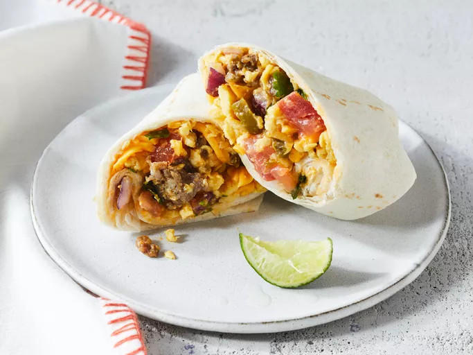

Protein-Packed Breakfast Burrito

Description
This is a lovely, southern-style burrito that brings a lot of flavor to your mouth munchies. With over 30g of protein in every portion, its a healthy and nutritious start to your day!
My favorite thing about this burrito is that it works so well for meal prepping! This is my go-to when it comes to a protein heavy meal I can eat throughout the week. If you're someone who isn't a big fan of leftovers, you can always freeze these burritos, so that when you baked them they're as fresh as possible! Personally, I prepare upwards of 15-20 burritos at once then eat them over the next week or two.
Ingredients
- 1 lbs of ground beef or sausage
- 3-4 whole eggs
- 3-4 egg whites
- 1 bell pepper
- 1/2 an onion
- 1 lbs mexican cheese blend
- salt and pepper to taste
- 1 pack of taco seasoning per pound of meat
- 1 1/2 teaspoons of garlic
Steps
- Chop your onion and bell pepper
- Season your meat, add garlic, mix together
- Start cooking your meat on medium heat
- Crack eggs into a bowl and stir till scrambled
- In a seperate pan, begin sauteeing the onion and bell pepper, and season in salt and pepper
- After the veggies are cooked a lil over halfway, pour your eggs into the pan with the veggies
- Continue to stir both your meat and your eggs.
- Once both have finished, keep seperate and prep your burrito rolling station!
- Begin by laying out an empty tortilla and scooping in equal parts meat and egg mixture.
- Top with a 1/3 of a cup of cheese blend
- Then roll your burrito up!
- After rolling all your burritos, toast the outside on the pan with some butter or oil on a low medium heat until golden brown!
Now you have some Delicious Southern-Style Breakfast Burritos!